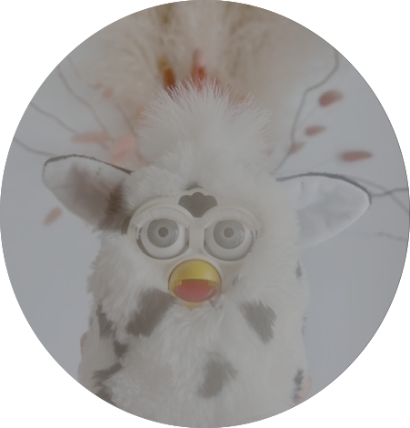

JACQUELINE R. M. A. MAASCH
Welcome to my blog. This is where I will house musings, resource guides, etc. Stay tuned.

Welcome to the hidden curriculum. Unsolicited and unspoken advice on succeeding as a PhD student. Reflections on what I know now and what I wish I had known sooner.
read more
Causal inference resources. An ongoing compilation of Python and R packages for causal inference, causal discovery, benchmarking, and data generation.
read more
Tengo miedo
Pablo Neruda ❦ Crepusculario, 1923
Tengo miedo. La tarde es gris y la tristeza
del cielo se abre como una boca de muerto.
Tiene mi corazón un llanto de princesa
olvidada en el fondo de un palacio desierto.
Tengo miedo - Y me siento tan cansado y pequeño
que reflojo la tarde sin meditar en ella.
(En mi cabeza enferma no ha de caber un sueño
así como en el cielo no ha cabido una estrella.)
Sin embargo en mis ojos una pregunta existe
y hay un grito en mi boca que mi boca no grita.
¡No hay oído en la tierra que oiga mi queja triste
abandonada en medio de la tierra infinita!
Se muere el universo de una calma agonía
sin la fiesta del Sol o el crepúsculo verde.
Agoniza Saturno como una pena mía,
la Tierra es una fruta negra que el cielo muerde.
Y por la vastedad del vacío van ciegas
las nubes de la tarde, como barcas perdidas
que escondieran estrellas rotas en sus bodegas.
Y la muerte del mundo cae sobre mi vida.
Thus we may have knowledge of the past but cannot control it; we may control the future but have no knowledge of it.
Claude Elwood Shannon ❦ Coding Theorems for a Discrete Source With a Fidelity Criterion, 1959
Once men turned their thinking over to machines in the hope that this would set them free. But that only permitted other men with machines to enslave them.
Frank Herbert ❦ Dune, 1965
The crisis consists precisely in the fact that the old is dying and the new cannot be born; in this interregnum a great variety of morbid symptoms appear.
Antonio Gramsci ❦ Quaderni del carcere, 1947
All Watched Over By Machines Of Loving Grace
Richard Brautigan ❦ 1967
I like to think (and
the sooner the better!)
of a cybernetic meadow
where mammals and computers
live together in mutually
programming harmony
like pure water
touching clear sky.
I like to think
(right now, please!)
of a cybernetic forest
filled with pines and electronics
where deer stroll peacefully
past computers
as if they were flowers
with spinning blossoms.
I like to think
(it has to be!)
of a cybernetic ecology
where we are free of our labors
and joined back to nature,
returned to our mammal
brothers and sisters,
and all watched over
by machines of loving grace.